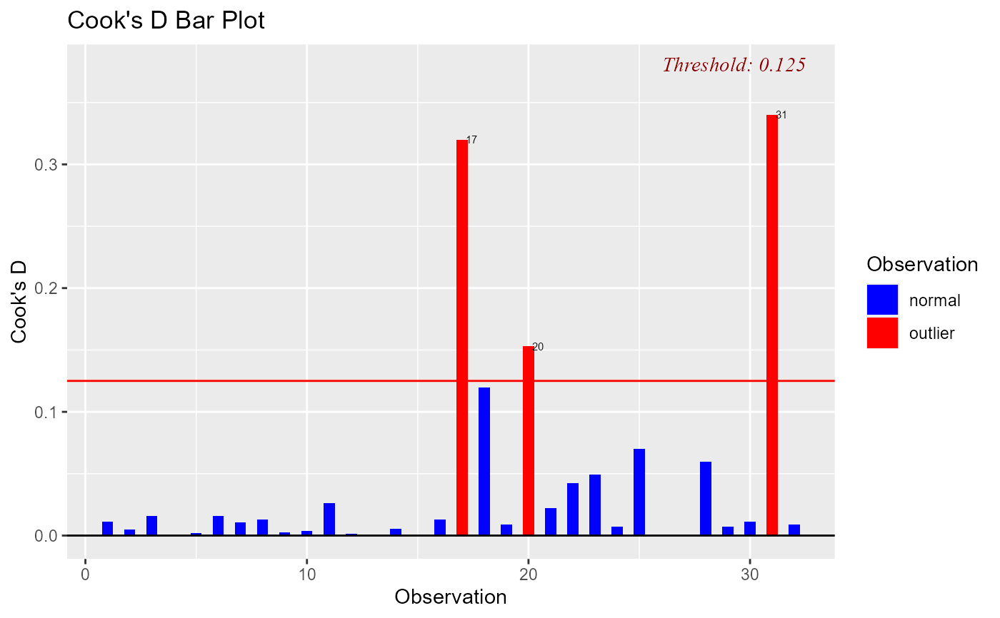

Bar Plot of cook's distance to detect observations that strongly influence fitted values of the model.
ols_plot_cooksd_bar(model, type = 1, print_plot = TRUE)
| model | An object of class |
|---|---|
| type | An integer between 1 and 5 selecting one of the 6 methods for computing the threshold. |
| print_plot | logical; if |
ols_plot_cooksd_bar returns a list containing the
following components:
a data.frame with observation number and cooks distance that exceed threshold
threshold for classifying an observation as an outlier
Cook's distance was introduced by American statistician R Dennis Cook in 1977. It is used to identify influential data points. It depends on both the residual and leverage i.e it takes it account both the x value and y value of the observation.
Steps to compute Cook's distance:
Delete observations one at a time.
Refit the regression model on remaining \(n - 1\) observations
examine how much all of the fitted values change when the ith observation is deleted.
A data point having a large cook's d indicates that the data point strongly influences the fitted values. There are several methods/formulas to compute the threshold used for detecting or classifying observations as outliers and we list them below.
Type 1 : 4 / n
Type 2 : 4 / (n - k - 1)
Type 3 : ~1
Type 4 : 1 / (n - k - 1)
Type 5 : 3 * mean(Vector of cook's distance values)
where n and k stand for
n: Number of observations
k: Number of predictors
ols_cooksd_barplot() has been deprecated. Instead use ols_plot_cooksd_bar().
[ols_plot_cooksd_chart()]
